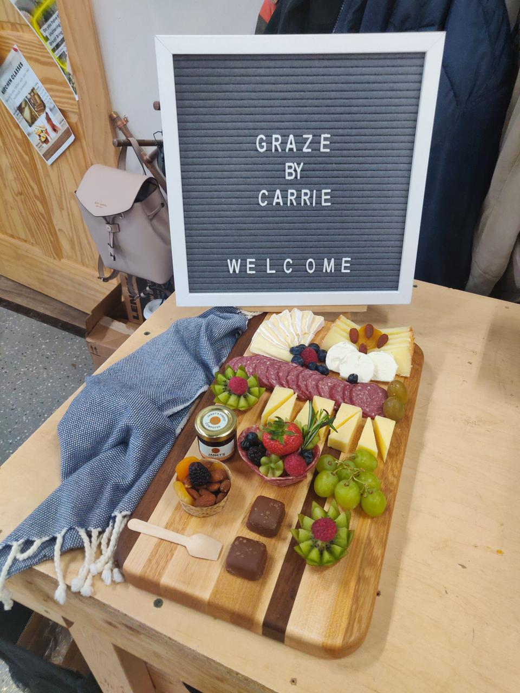

Charcuterie and Cutting Boards
I had a work retreat this week. The second half of the day was a fun activity where we made our own cutting boards at a woodworking studio. It was a lot of fun as my whole team is made of creative people. I also used to do a lot of woodworking when I was younger and it was nice to return to that.
We made some standard edge grain cutting boards that you might see sold by an artist at a Farmer's market. The one thing that really surprised me was that during gluing the boards were only clamped for 30 minutes. The leader of the class made the process really time efficient.
Afterward, a lady came and taught us how to make a charcuterie arangement on the boards we just made. It was a fun time of drinking and making food art. However, my salami rose looked more like a sombrero, so I decorated it as such.
